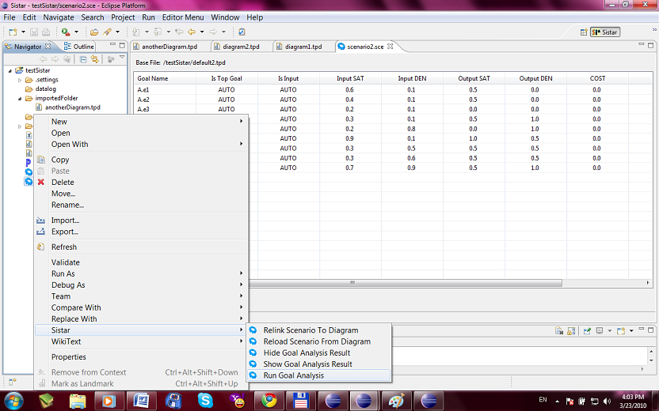

Scenario Action
Right click a scenario file and choose Sistar will show the scenario action.

- Run Goal Analysis: Run the Goal Reasoning solver over the current scenario and show the results.
- Show Goal Analysis Result: Show the results of Goal analysis graphically
- Hide Goal Analysis Result: Hide the results of Goal analysis graphically
- Reload Scenario From Diagram: Load any updates for the scenario from the corresponding diagram
- Relink Scenario To Diagram: Associate the scenario to other diagram and reload the content